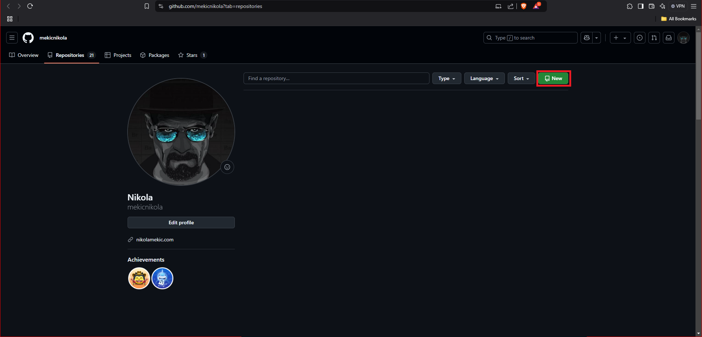
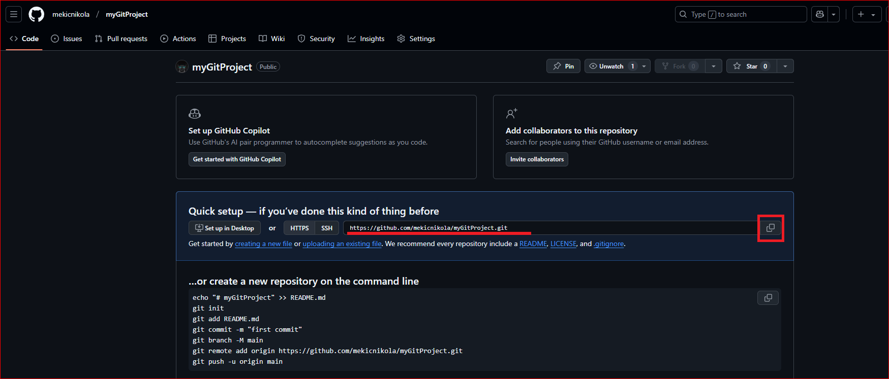

Git i R
1. Uvod u Git (Osnovne Komande)
Šta je Git?
Git je distribuirani sistem za upravljanje verzijama koda koji omogućava praćenje svih promena u projektu, kreiranje backup-a i olakšava saradnju unutar tima. Njegova osnovna svrha je da osigura bezbedno čuvanje koda i omogući timovima da rade paralelno bez rizika od gubitka podataka ili preklapanja verzija. Svaka promena koja se napravi u projektu može biti zabeležena i praćena kroz istoriju commit-ova.
Instalacija Git-a:
Pre nego što počnete sa radom u Git-u, potrebno je instalirati Git na vaš računar. Posetite sledeći link kako biste preuzeli instalacioni paket.
U terminalu:
git --versionOva komanda prikazuje trenutno instaliranu verziju Git-a i potvrđuje da je instalacija uspešno obavljena.
Osnovne Komande:
Inicijalizacija repozitorijuma
Na repozitorijum se može gledati kao na projekat
Ova komanda kreira novi lokalni repozitorijum u trenutnom direktorijumu. Koristite je kada želite da započnete novi projekat sa Git-om:
git initKloniranje repozitorijuma
Koristi se za preuzimanje kopije postojećeg repozitorijuma sa udaljenog servera na vaš računar (npr. sa github-a):
git clone [URL_REPOZITORIJUMA]Dodavanje fajlova u staging
Dodaje fajlove u staging area, pripremajući ih za sledeći commit. Koristite ovu komandu kada želite da specificirate koje izmene će biti sačuvane:
git add .Kreiranje commit-a
Kreira snapshot trenutnog stanja projektnog direktorijuma. Commit treba da ima jasan opis koji objašnjava šta je izmenjeno:
git commit -m "Opis commit-a"
Svaki commit ima jedinstveni ID pa je moguće vratiti se "u prošlost" na prethodnu verziju koda
Slanje promena na udaljeni repozitorijum
Ova komanda šalje lokalne promene na udaljeni repozitorijum gde se on čuva i omogućavajući drugim članovima tima da ih vide:
git push origin mainPreuzimanje promena sa remote-a
Koristi se za preuzimanje izmena sa udaljenog repozitorijuma i ažuriranje lokalne verzije projekta:
git pull origin mainPregled stanja
Prikazuje informacije o trenutnom statusu lokalnog repozitorijuma, uključujući fajlove koji su izmenjeni, ali nisu dodati u staging area:
git statusIstorija izmena
Prikazuje listu svih komitova u projektu, omogućavajući praćenje istorije rada:
git log --onelineKorišćenje kroz R Studio:
Kreiranje novog projekta se može izvršiti na dva načina.
1. način je da direktno iz okruženja kreiramo git projekat

Dodeli se naziv projektu, označi opcija "Create git repository" i kreira projekat
Međutim, ovo možda i nije najbolja opcija jer R studio nije najbolje okruženje za rad sa gitom. Glavnu granu nazove master (kako se zvala ranije) umesto main
Pa bi bolje rešenje bio 2. način:
Na Github-u se kreira novi repozitorijum

Zatim se iskopira njegova adresa
Nakon toga se kreira novi projekat
Ali ovog puta se izabere Version control
Zalepi se kopirana adresa Github repozitorijuma, kreira novi projekat i time klonira taj izabrani Github repozitorijum
Ukoliko želimo da kloniramo tuđ projekat sa tuđeg repozitorijuma a ne želimo da sarađujemo sa njim na projektu, već da odatle nastavimo sa svojim izmenama možemo ga Fork-ovati na svoj github nalog a zatim klonirati odatle.
Kada je projekat kloniran na lokalni računar, može se započeti sa radom
Npr. dodaćemo mu neku R skriptu:
Nakon što su izmene u fajlu napravljene (obično nakon što je dodata neka nova funkionalnost) potrebno je preći na karticu Git, izabrati sve izmenjene fajlove i kliknuti na Commit
Potrebno je napisati poruku commit-a (jasna, koncizna i opisna kako bi olakšala razumevanje istorije promena u projektu) i pritusnuti dugme Commit
Nakon izvršenog commit-a dostupna je opcija Push kojom će se promene postaviti na Github
Promene su sada vidljive na prikazu repozitorijuma u Github-u
Ako je neko drugi sadarđivao sa nama i pravio izmene u našem kodu ili smo to mi uradili sa drugog računara, da bismo povukli promene na željeni računar potrebno je uraditi Pull.
***Ovo je bio prikaz rada na glavnoj "main" grani koji je sasvim dovoljan za samostalni rad.
Za rad u timu, koristi se grananje gde svaki programer radi na svojoj grani svoj zadatak a nakon toga se spaja sa main granom.
***Ukoliko neko planira da materijale sesija samo gleda, dovoljno je da klonira repozitorijum.
Ukoliko ipak želi da dodaje svoje beleške ili menja kod a čuva istoriju svega toga potrebno je da Fork-uje repozitorijum na svoj nalog.
2. Grananje i Merge Konflikti
Kreiranje i Prebacivanje na Novu Granu
Grananje omogućava paralelni rad na različitim delovima projekta bez uticaja na glavnu verziju projekta. Komande za rad sa granama su:
git branch [ime_grane] # Kreiranje nove grane
git checkout [ime_grane] # Prebacivanje na granu
git checkout -b [ime_grane] # Kreiranje i prebacivanje na novu granuSpajanje Grana
Kada završite rad na novoj grani, možete je spojiti sa glavnom granom koristeći sledeće komande:
git checkout main
git merge [ime_grane]Rešavanje Merge Konflikata
Konflikti nastaju kada dve ili više grana imaju izmene na istim delovima koda. Git označava konflikte i od vas traži da ih ručno rešite:
- Otvorite fajl sa konfliktima i ručno izmenite linije između
<<<<<<<,=======,>>>>>>>. - Nakon rešavanja:
git add [ime_fajla] git commit -m "Rešen konflikt"
3. Šta je GitHub?
GitHub je platforma za hostovanje Git repozitorijuma i omogućava kolaboraciju na daljinu sa timovima programera. Razlika između Git-a i GitHub-a je u tome što je Git alat za lokalno upravljanje verzijama koda, dok je GitHub platforma za deljenje projekata i rad na zajedničkim repozitorijumima.
4. `git rebase` i `git stash`
`git stash` – Privremeno Čuvanje Izmena
Kada želite da privremeno sačuvate izmene bez kreiranja komita, koristite komandu git stash. Ovo je korisno kada prelazite na rad na drugoj grani:
git stash # Sačuvaj izmene i vrati radni direktorijum na čist
git stash pop # Vrati izmene iz stash-a
git stash list # Prikaži sve stash-ove`git rebase -i` – Interaktivno Preuređivanje Komitova
Interaktivni rebase omogućava uređivanje istorije komitova kako biste spojili komitove, preimenovali ih ili uklonili nepotrebne promene:
git rebase -i HEAD~n # Rebase poslednjih n komitovaMogućnosti:
pick– zadrži komitsquash– spoji komit sa prethodnimedit– izmeni komit
5. Git Hooks – Automatizacija
Šta su Git Hooks?
Git Hooks su skripte koje se automatski pokreću tokom određenih Git operacija, poput komitovanja ili spajanja grana. Ovi skripti mogu proveravati format koda, pokretati testove i slično.
Primer `pre-commit` Hook-a:
Skripta koja proverava format koda pre komitovanja:
- Kreirajte fajl
.git/hooks/pre-commiti unesite sledeći sadržaj:#!/bin/bash ./lint.sh - Postavite dozvole za izvršavanje:
chmod +x .git/hooks/pre-commit
6. `git bisect` – Pronalaženje Baga
Kako `git bisect` Funkcioniše
`git bisect` koristi binarnu pretragu kako bi pronašao prvi komit gde se pojavila greška. Ovo je korisno kada imate veliki broj komitova i želite brzo da pronađete uzrok problema.
git bisect start
git bisect bad HEAD # Trenutna verzija je loša
git bisect good [commit_id] # Poslednja dobra verzijaGit će vas voditi kroz korake kako biste na osnovu svojih odgovora pronašli problematičan komit.
Povratak na normalno stanje:
git bisect reset7. GitHub kao Platforma za Saradnju
Kreiranje Pull Request-a (PR)
Pull Request (PR) je zahtev za spajanje vaših izmena sa glavnom granom projekta. Na GitHub-u kreirate PR, pišete opis vaših izmena i tražite da kolege pregledaju vaš rad.
Pregled i Komentarisanje PR-a:
Kolege mogu komentarisati linije koda u okviru vašeg PR-a kako bi ukazali na moguće ispravke ili predložili poboljšanja.
8. Podešavanje Git Konfiguracije (`.gitconfig`)
Globalna Podešavanja:
Git omogućava konfiguraciju globalnih postavki kao što su ime autora i email adresa:
git config --global user.name "Vaše Ime"
git config --global user.email "vaš.email@example.com"Dodavanje Alijasa:
Alijasi omogućavaju skraćene komande za češće korišćene operacije:
git config --global alias.co checkout
git config --global alias.br branch
git config --global alias.cm commit9. Kolaboracija sa `fork` i `upstream`
Razlika između `clone`, `fork` i `upstream`:
`clone` preuzima kopiju repozitorijuma na vaš računar, `fork` pravi kopiju repozitorijuma na vašem GitHub nalogu, dok `upstream` označava originalni repozitorijum sa kojeg je `fork` napravljen.
Dodavanje `upstream`-a:
Kada radite sa fork-ovanim repozitorijumom, potrebno je da dodate `upstream` kako biste mogli da ažurirate svoj repozitorijum sa originalnim izmenama:
git remote add upstream [URL_ORIGINALNOG_REPOZITORIJUMA]Ažuriranje `fork`-a:
Preuzimanje izmena iz `upstream` repozitorijuma i njihovo spajanje sa vašim lokalnim repozitorijumom:
git fetch upstream
git merge upstream/main9. Git CI/CD Pipeline-ovi
Git pipeline-ovi se koriste za automatizaciju procesa kao što su testiranje koda, buildovanje aplikacija i njihovo automatsko objavljivanje. CI/CD (Continuous Integration/Continuous Delivery) proces obično uključuje sledeće korake:
1. Definisanje `YAML` fajla za CI/CD
Većina CI/CD alata koristi YAML fajlove za definisanje pipeline-a. Na primer, sledeći kod predstavlja osnovni primer `.gitlab-ci.yml` fajla za GitLab CI:
stages:
- build
- test
- deploy
build-job:
stage: build
script:
- echo "Pokreće se build proces"
- ./build_script.sh
test-job:
stage: test
script:
- echo "Pokreće se testiranje"
- ./run_tests.sh
deploy-job:
stage: deploy
script:
- echo "Pokreće se deploy"
- ./deploy.sh2. Primer GitHub Actions fajla (`.github/workflows/ci.yml`)
GitHub Actions koristi sličan pristup za definisanje automatizovanih koraka:
name: CI Pipeline
on:
push:
branches:
- main
jobs:
build:
runs-on: ubuntu-latest
steps:
- name: Checkout koda
uses: actions/checkout@v2
- name: Instalacija zavisnosti
run: npm install
- name: Build projekta
run: npm run build
test:
runs-on: ubuntu-latest
steps:
- name: Checkout koda
uses: actions/checkout@v2
- name: Pokretanje testova
run: npm test3. Pokretanje lokalnih testova pre commit-a
Pre nego što se pipeline izvrši na udaljenom repozitorijumu, možete pokrenuti lokalne skripte za testiranje:
# Pokretanje lokalnog testiranja
./run_tests.sh4. `pre-push` Hook za automatsko testiranje
Možete koristiti Git hook kako biste osigurali da testovi prođu pre slanja izmena:
#!/bin/bash
echo "Pokrećem testove pre git push-a..."
./run_tests.sh
if [ $? -ne 0 ]; then
echo "Testovi nisu prošli! Poništavam push."
exit 1
fi
Skript se može sačuvati u .git/hooks/pre-push kako bi se automatski izvršavao.
5. Automatizovano objavljivanje
U CI/CD pipeline-u, nakon što su build i testovi uspešni, možete dodati korak za automatsko objavljivanje:
deploy:
stage: deploy
script:
- echo "Deployovanje aplikacije..."
- ssh user@server 'bash -s' < ./deploy_script.sh6. Rešavanje problema
Ako CI/CD pipeline ne uspe, koristi se `git log`, `git diff`, i detaljni output log kako biste pronašli uzrok problema. Svaki neuspešan korak obično ima povratni kod i opis greške.
CI/CD pipeline-ovi omogućavaju automatizaciju procesa razvoja i osiguravaju pouzdanost aplikacije. Početna postavka može zahtevati dodatno vreme, ali dugoročno značajno povećava produktivnost i smanjuje mogućnost grešaka.